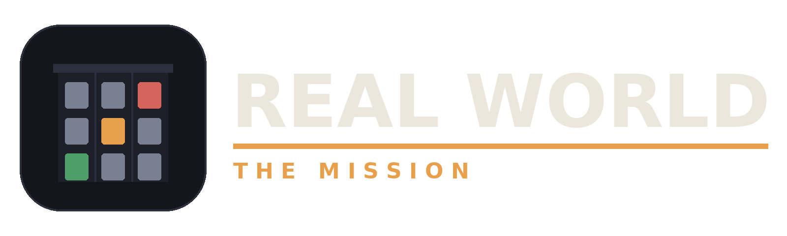
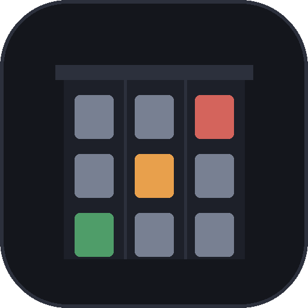
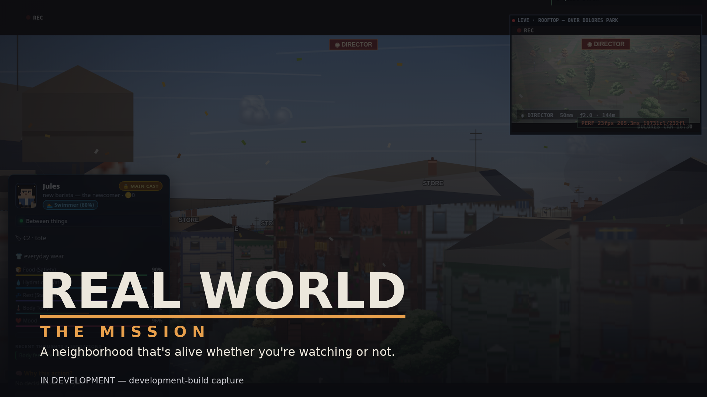
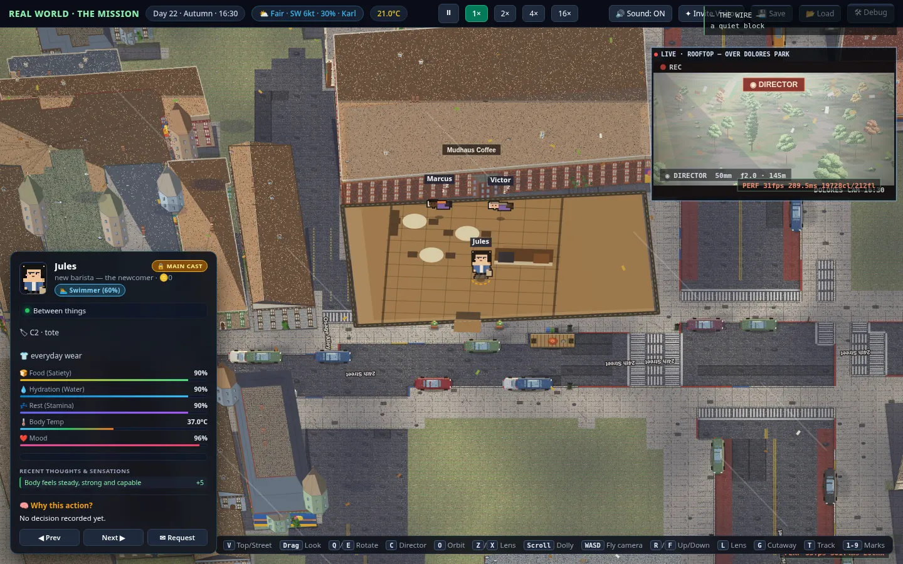
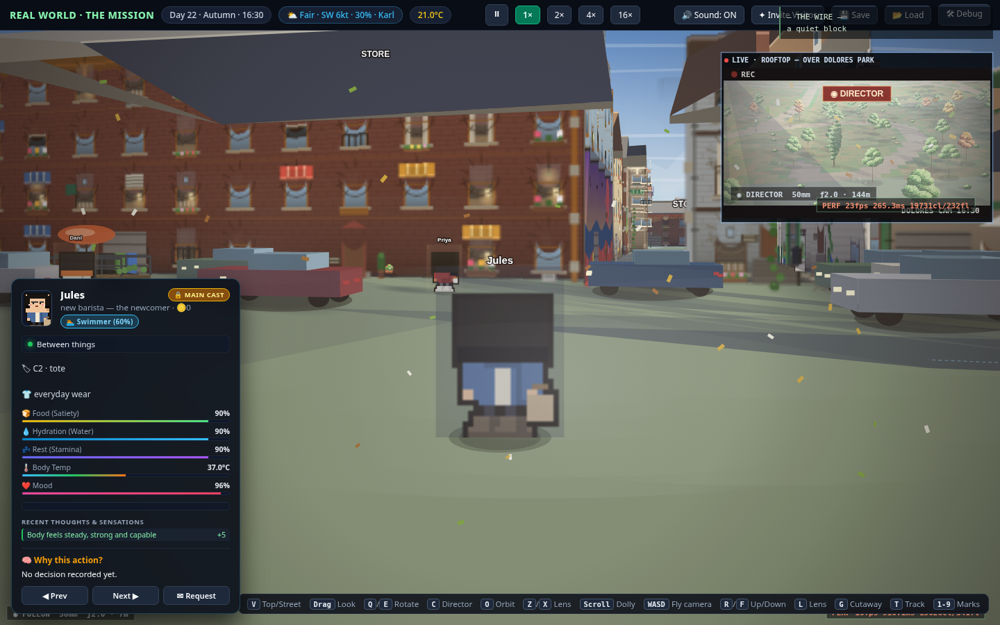
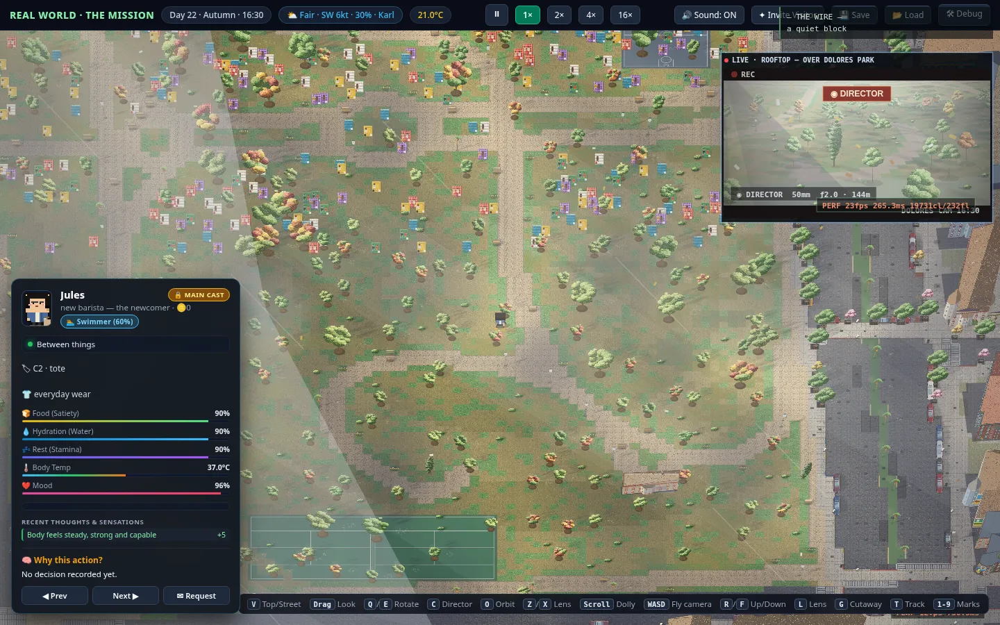
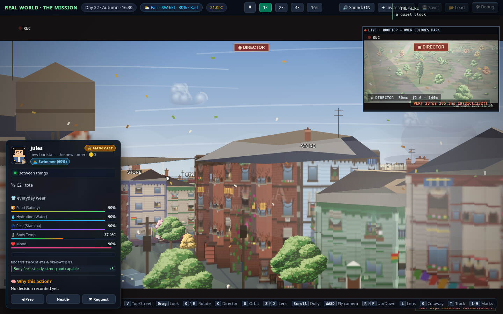
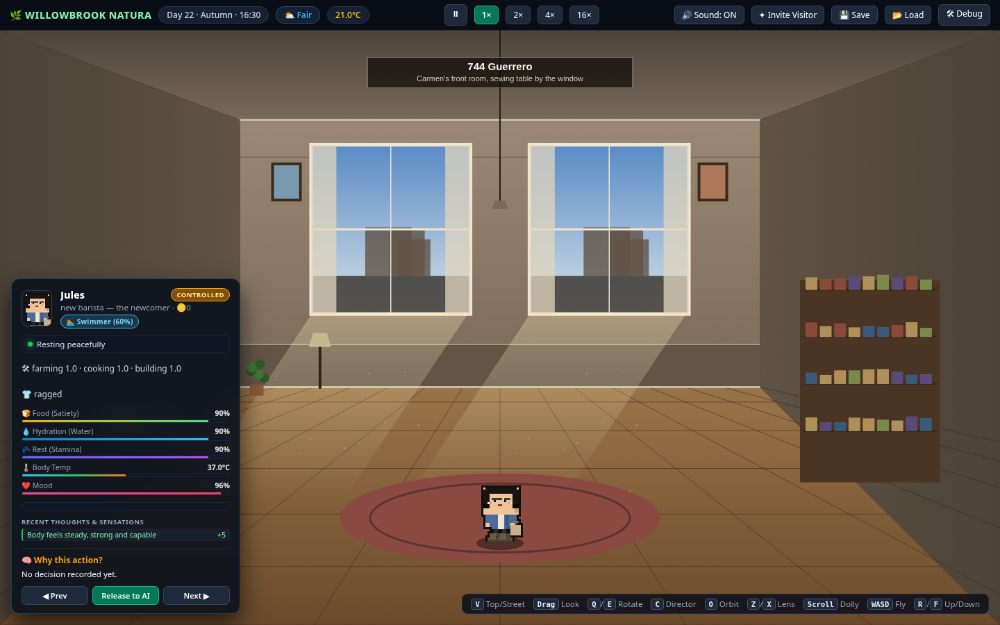

Press kit
Real World
A persistent AI neighborhood on a real Mission District block — free to watch, paid to reach into. First neighborhood: The Mission.
This page is a pre-launch draft. The full kit —
logos, key art, screenshots, social banners, print-ready fact sheet,
press release draft, Q&A, an approved-wording copy deck, creator
notes, a positioning/context sheet, a 10-minute press-preview run
sheet, a deadline desk for fast coverage, an embargo briefing book,
a self-guided review guide, a printable one-sheet and contact sheet,
captions, and usage terms — is bundled at
marketing/press-kit/ (open its index.html for
a self-contained offline hub); build the zip with
./marketing/build-press-kit.sh. Remaining placeholders are
labeled below.
Fact sheet
| Item | Detail |
|---|---|
| Title | Real World — first neighborhood: "The Mission" |
| Genre | Persistent life simulation / spectator sim |
| Platform | Web browser (desktop-first) |
| Status | In active development — no public build yet |
| Price model | Free to watch; optional paid requests, character slots, and subscription via non-transferable credits |
| Setting | Real street geometry of SF's Mission District around Dolores Park; all residents and addresses fictional |
| Cast | 8 main characters with full AI minds (unpossessable by anyone) + 20 ambient neighbors |
| Core mechanics | Time-boxed paid requests (exclusive/compatible/queued), public request feed, tenant→owner→landlord progression |
| Not included | No voice acting, no loot boxes, no cash-out/RMT, no crypto |
| Developer | [STUDIO NAME — placeholder] |
| Release date | TBD |
| Contact | [press@ — placeholder, set at launch] |
| Website | [domain — placeholder] |
Boilerplate
Short (50 words)
Real World is a persistent browser life-sim set on real Mission District street geometry. Twenty-eight AI residents — each one an AI that knows it, with no script and no assigned purpose — keep living whether you watch or not. Watching is free; players pay only to file screened, public requests — never to control the cast.
Long (150 words)
Real World is a browser-based "Truman Show": a persistent life simulation set on real streets around Dolores Park in San Francisco's Mission District. Twenty-eight fictional residents — eight main characters with full AI minds and twenty ambient neighbors — live, work, feud, and make up around the clock, whether anyone is watching or not. The mains are AIs who know they're AI: born on the block with no assigned purpose, choosing what they're for — unaware it's a simulation, unaware anyone's watching. Watching is free, always. Players who want to reach in buy agency, not access: a request declares an action and duration upfront, prices it in credits, caps it hard, and posts it to a public feed everyone can read. The eight mains can never be possessed — by players or by the game's own owner — and every secret stays theirs to leak. Players who move in rent, work, and climb the neighborhood's oldest ladder: tenant, owner, landlord.
Assets
Interactive brand book with one-click downloads: Brand & assets. Files below are the same masters, bundled in the zip.
All assets below are real files in the kit bundle
(press-kit/). Logos are the lit-window rowhouse mark — don't
recolor or redraw it. Screenshots and key art are real captures from the
development build (v76 set, matching the site gallery's latest captures) and may be used with attribution and the
"in development" label intact.

press-kit/logos/logo-primary.svg/.png
press-kit/logos/logo-icon.svg/.png
press-kit/keyart/Screenshots (development build)






Video
Angles worth covering
The possession ban
Eight AI characters nobody — including the developer — can control. The audience trusts the world precisely because they can't break it.
A real block
Real Mission streets and Dolores Park as the stage; every resident and address fictional. A neighborhood you could walk to.
Agency by the minute
Time-boxed requests with hard caps and a public feed — a different answer to "how do you monetize a world" than loot boxes or subscriptions alone.
Contact
Press: [press@ — placeholder, set at launch]
General: [hello@ — placeholder]
Social: [handles — placeholder, no accounts registered yet]
No public contact channels exist yet — this is a pre-launch draft. When accounts are registered (with owner approval) this section will carry real addresses.